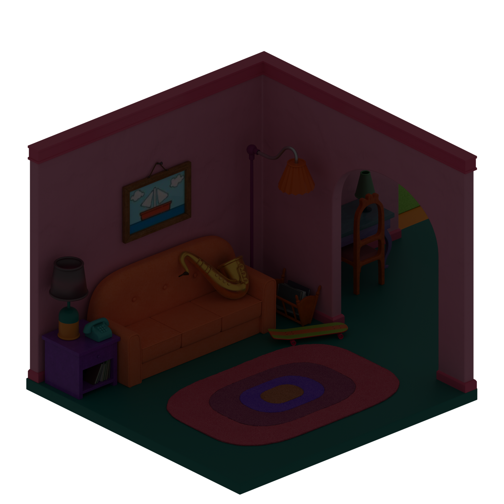

En esta práctica vamos a trabajar con un visualizador 3D ya construido en Java. El objetivo principal no es aprender desde cero algoritmos avanzados de renderizado, sino abrir el proyecto, probarlo y entender cómo se relacionan la interfaz, la cámara, los materiales y la iluminación.
La parte teórica sirve sobre todo para orientarte. No hace falta dominar todas las fórmulas para seguir la práctica ni para sacar partido al proyecto.
Al finalizar, deberías ser capaz de:
Importar y ejecutar en Eclipse un proyecto Java organizado en paquetes.
Identificar en el código las clases principales del visualizador y relacionarlas con lo que aparece en pantalla.
Experimentar con el modo Raster y observar cómo cambian el resultado la cámara, la luz y el material.
Entender, a nivel conceptual, que Phong es una aproximación rápida y que en herramientas profesionales como Blender suelen emplearse modelos de iluminación más completos.
Entrega: un documento Word que responda a las cuestiones que aparecen a lo largo del guion.
El visualizador
Importando el visualizador
Descarga el archivo visualizador.zip y descomprímelo en la carpeta del workspace de Eclipse. Para importar el proyecto:
Ve a File → Import.
Selecciona General → Existing projects into workspace.
Elige la carpeta PracticaVisualizador.
Alternativamente, puedes ir a File → New → Java project, elegir un nombre, marcar Create project from existing source, pulsar Browse y seleccionar la carpeta con el código.
El código fuente: organización por paquetes
El visualizador es una aplicación suficientemente grande como para que resulte necesario agrupar las clases en paquetes. Un paquete es un conjunto de clases que representan conceptos relacionados entre sí.
El código fuente está dividido en tres paquetes:
geometria: clases que representan elementos geométricos: puntos, vectores, normales, caras, objetos y matrices de transformación.
escena: clases que representan los elementos de la escena: colores, materiales, luces y la cámara.
interfaz: clases que representan el interfaz gráfico: la ventana principal y los paneles de visualización y configuración.
Puedes ver estos paquetes en el explorador de paquetes de Eclipse, en la parte izquierda de la pantalla. En el sistema de archivos, cada paquete se corresponde con una carpeta dentro de la carpeta del proyecto.
Experimenta con los paquetes
Crea un paquete nuevo: haz clic derecho sobre el proyecto y ve a New → Package. Ponle el nombre que quieras y pulsa Finish.
Después, arrastra y suelta Luz.java del paquete escena al nuevo paquete. Antes de confirmar, asegúrate de que está marcada la opción Update references to the moved elements y pulsa Preview para ver qué cambios se realizarían en todo el código del proyecto. Una vez revisados, vuelve a dejar Luz.java en escena y borra el paquete que has creado (botón derecho → Delete).
¿Por qué esos cambios de código? Cuando desde un archivo quieres acceder a una clase de otro paquete, tienes dos opciones: o escribir <paquete>.<clase>, o bien poner al principio import <paquete>.<clase> y usar simplemente <clase>.
El código fuente: una clase, un archivo, un concepto
La regla habitual de la programación orientada a objetos es que cada archivo contiene una clase, y cada clase representa un concepto concreto.
En el paquete geometria hay tres clases geométricas básicas:
Punto: punto en el espacio (vector de 3 componentes).
Direccion: dirección en el espacio (vector de 3 componentes).
Normal: normal en el espacio, dirección de longitud 1.
Un Objeto es una serie de caras y vértices. Un vértice es un punto junto con su normal, y una Cara es una lista de vértices con aristas entre puntos consecutivos (y entre el último y el primero).
Explora el código
Abre en Eclipse los archivos de las clases Punto, Direccion y Normal. Repasa el código de cada una y observa cómo se relaciona con el Outline que aparece a la derecha, que muestra esquemáticamente los atributos y métodos de la clase.
¿En qué clase está el método public static void main(String s[])? Sólo puede haber uno por aplicación; búscalo (pista: está en una de las clases del paquete interfaz).
Crea una captura de pantalla de Eclipse donde se vea la estructura completa del proyecto.
Ejecutando el visualizador
Ejecuta el visualizador desde Eclipse. Para cargar un objeto tridimensional, ve a Archivo → Abrir y selecciona un archivo .obj de la carpeta objetos3d del proyecto. Te recomendamos empezar con teapot.obj. La carga puede tardar unos segundos.
Puedes cambiar el modo de visualización entre Malla de alambre (wireframe), donde sólo se muestran las aristas, y Raster, que rellena las caras con iluminación.
Experimenta con el visualizador
Crea una captura de pantalla donde se vea el visualizador ejecutándose en tu ordenador.
Prueba a cambiar los diferentes parámetros de la cámara o a activar el backface culling. ¿Qué ocurre?
En modo Raster, cambia las propiedades del material (Escena → Material). Intenta conseguir que el objeto sea de color amarillo.
Juega también con las propiedades de la luz (Escena → Luz).
Editando código
Los parámetros de la cámara están en inglés en el interfaz gráfico. Todo el interfaz relacionado con la cámara está en la clase PanelCamara.
Traduce la interfaz
Busca en PanelCamara las cadenas de texto que hay en las etiquetas de la interfaz gráfica. En Java, las cadenas van siempre entre comillas dobles. Las cadenas de la interfaz suelen aparecer en las líneas que contienen JLabel. Cámbialas a castellano.
Muestra el resultado con una captura de pantalla.
Cuidado: si modificas algo que no sea una cadena de texto, el código puede dejar de compilar. Siempre puedes deshacer los cambios.
Depuración de errores
En aplicaciones de este tamaño, el depurador de Eclipse resulta muy útil para entender paso a paso qué hace el código. Vamos a depurar el método matrizDeProyeccion() de la clase PanelVisor del paquete interfaz.
Pon un punto de ruptura (breakpoint): botón derecho sobre la línea → Toggle Breakpoint.
Ejecuta la aplicación en modo depuración (el botón con el insecto).
Pulsa F6 repetidamente para avanzar paso a paso y observa cómo se va construyendo la matriz de proyección.
¿Por qué el programa vuelve una y otra vez a esa misma línea aunque no hayas hecho nada?
Cuando termines, desactiva el breakpoint: botón derecho → Disable Breakpoint.
El visualizador por dentro
Idea clave
En esta parte no hace falta memorizar matrices ni seguir todas las fórmulas al detalle. Quédate con esta idea: el programa coloca el objeto respecto a la cámara, proyecta los puntos sobre la pantalla, decide qué partes se ven y les asigna un color.
Con esa intuición ya puedes entender lo esencial del visualizador y trabajar con el proyecto sin perderte en la matemática.
Proyectando 3 dimensiones en 2 dimensiones
Si vienes de una formación más espacial que matemática, piensa en este paso como una traducción: del modelo 3D a la imagen 2D que termina apareciendo en pantalla. El programa toma cada punto del objeto, lo sitúa respecto a la cámara y calcula dónde debe dibujarse.
En el código esa traducción se implementa con matrices de cuatro dimensiones (clase Matriz4x4). No hace falta memorizar la técnica: basta con saber que permite encadenar traslaciones, giros y perspectiva de una forma uniforme. Para ello, a cada punto se le añade una cuarta componente llamada coordenada homogénea:
La clase Vector4 representa ese vector de 4 dimensiones. La transformación de un vector respecto a una matriz es un producto:
\[
V_t = M \cdot V
\]
donde \(V_t\) es el vector transformado, \(M\) la matriz y \(V\) el vector original. Para recuperar el punto 3D se divide por la coordenada homogénea \(w\):
¿Qué dos métodos de la clase Punto encapsulan respectivamente la conversión \((x,y,z) \to (x,y,z,1)\) y la vuelta \((x,y,z,w) \to (x/w,\,y/w,\,z/w)\)? Estudia su código.
En el método matrizDeProyeccion() de PanelVisor, comenta la línea:
(añade // al principio) y vuelve a ejecutar. ¿Qué ha cambiado? Prueba a comentar otras líneas del mismo método.
Matrices de transformación
Las operaciones importantes aquí son muy intuitivas: trasladar un objeto, cambiar su tamaño y girarlo. La clase Matriz4x4 tiene un método para cada una. No hace falta memorizar las matrices; úsalas como una forma compacta de expresar esas transformaciones:
La siguiente visualización muestra cómo actúa rotacionZ sobre un punto del plano XY. Mueve el ángulo y observa cómo se actualizan los valores de la matriz:
35°
rotacionZ(a) — submatriz XY
x
y
x′
y′
Punta de la flecha ●
Antes: (0.70, 0.00)
Después:
La proyección en perspectiva
Aquí aparece un efecto que ya conoces de la fotografía y de la visualización arquitectónica: los objetos lejanos se ven más pequeños, y cambiar la focal cambia cuánto abarca la cámara.
En el visor sucede lo mismo. Primero se coloca el objeto con respecto a la cámara, después se aplica la perspectiva y al final se convierten las coordenadas a píxeles de la pantalla. Si solo quieres quedarte con una idea, quédate con esta: una focal mayor cierra la vista; una focal menor la abre.
Una manera muy simple de resumirlo es esta:
\[
x' = \frac{f\,x}{z}
\]
Cuanto mayor es \(z\) (más lejos está el punto), menor aparece en pantalla. El resto de fórmulas del programa refinan esa misma idea para trabajar con una cámara completa, su campo de visión y el tamaño de la ventana.
Detalle técnico opcional
La matriz de perspectiva transforma coordenadas de cámara a coordenadas de recorte (clip space):
\(d\) controla la separación en profundidad entre la cámara y el objeto. Si piensas en una cámara mirando al objeto que tiene delante, \(d\) indica si ese objeto queda más cerca o más lejos de la cámara.
\(inc\) es la inclinación vertical de la cámara: equivale a inclinar la vista hacia arriba o hacia abajo.
\(rot\) es la rotación horizontal de la cámara alrededor del objeto: equivale a girar la vista hacia un lado o hacia otro.
\((x_c, y_c, z_c)\) son las coordenadas del centro del objeto, es decir, el punto de referencia a partir del cual el programa lo coloca y lo gira.
No hace falta preocuparse aquí por el signo exacto de cada transformación. Para seguir la práctica basta con esta idea: el visualizador coloca el objeto respecto a la cámara, ajusta la orientación de la vista y después calcula cómo se proyecta en la pantalla.
La siguiente visualización muestra ese proceso con una cámara idealizada en 3D. El plano de imagen tiene ancho w, alto h y está situado a una distancia focal f del centro de proyección. Ajusta los parámetros para ver cómo cambia el frustum y la imagen proyectada del objeto. Si la imagen formada es mayor que el sensor, no hay contradicción: simplemente el sensor sólo registra una parte y el objeto aparece recortado.
36 mm24 mm80 mm
Aspecto
1.50
FOV horizontal
25.36°
FOV vertical
17.06°
Encaje
Se recorta
Si la imagen proyectada es mayor que el sensor, el objeto queda recortado: la proyección existe, pero el sensor sólo registra una parte.
De angular a tele
Sensor 36 × 24 mm con distancia al objeto fija.
65 mmEncuadre amplioMás campo de visión, sensación más abierta.80 mmReferenciaLa vista base usada en la comparativa.100 mmEncuadre estrechoMenor campo de visión, imagen proyectada mayor.
mas angularmas tele
A mayor focal, menor campo de vision y mayor imagen proyectada sobre el sensor.
Compruébalo con un ejemplo
Prueba con el punto \((4,\, 3,\, 2)\) y una rotación de 90° con respecto al eje Z. Puedes multiplicar el vector fila \((4\ 3\ 2\ 1)\) por la matriz correspondiente, pero no hace falta convertirlo en una cuenta larga: lo importante es entender qué cambio geométrico se produce.
Ejecuta después el código en modo depuración para comprobar cómo se realiza esa rotación en el visualizador. Explícalo brevemente en el documento Word.
Modos de visualización
PanelVisor gestiona la visualización del objeto con dos modos:
En esta práctica nos interesa sobre todo el segundo, porque es el que utiliza la iluminación de Phong del proyecto proporcionado.
Malla de alambre (pintarMallaAlambre): se recorren todas las Caras, se transforman sus Puntos y se dibujan solo las aristas.
Raster: se rellena cada cara visible y se calcula el color de cada píxel con el modelo de iluminación de Phong. Además, se mantiene un z-buffer, es decir, un registro de profundidad para que una superficie del fondo no tape a otra que está delante.
Malla de alambreRaster (Phong)
El mismo objeto en los dos modos de visualización (focal 80 mm): arrastrar para comparar.
En ambos modos se puede activar el backface culling (método considerarCara), que descarta las caras cuya normal apunta en sentido contrario a la cámara, acelerando el proceso de pintado.
Busca en el código
Revisa los métodos considerarCara, pintarMallaAlambre y pintarCaraMallaAlambre, y los tres métodos que implementan el algoritmo raster. Identifica qué partes del algoritmo descrito en este guion implementa cada método. Compara los dos modos de visualización.
Más allá de Phong: contexto profesional
El visualizador de esta práctica no implementa renderizado físicamente realista, y tampoco es el objetivo que lo haga. Aun así, conviene saber que en herramientas profesionales como Blender el resultado final suele apoyarse en modelos de iluminación más completos que Phong.
En lugar de decidir el color de un punto solo con la luz directa y un brillo aproximado, estos motores intentan estimar cómo viaja la luz por toda la escena: qué parte llega directamente, qué parte rebota en paredes, suelos, techos o vidrios, y cómo responden los materiales. En arquitectura esto importa mucho, porque la percepción de un espacio depende en gran medida de esos rebotes de luz.
Qué debes retener
No necesitas aprender ni programar path tracing en esta práctica. Esta sección solo sirve para que, cuando en Blender veas palabras como samples, bounces, noise o Cycles, sepas a qué se refieren.
Detalle técnico opcional
Si quieres ver la formulación clásica, la idea se resume en la ecuación de renderizado de Kajiya (1986):
Leída sin entrar en todos los símbolos, viene a decir que el color que vemos en un punto depende de la luz que emite ese punto y de toda la luz que le llega después de interactuar con la escena.
El siguiente esquema no pretende que aprendas path tracing ni que lo programes: solo visualiza la idea de los rebotes. Desde una pequeña abertura de la cámara se lanzan varios rayos y, cada vez que uno choca con una superficie, nace un nuevo rayo desde ese último punto.
Rayos
18
Llegan a la luz
0
61836
146
Muestras, ruido y convergencia
La idea práctica es aproximar esos rebotes con muchas muestras. Si has visto que en Blender aparecen parámetros como samples o spp, vienen de aquí: el motor lanza muchas trayectorias posibles de la luz y promedia su efecto.
No hace falta que estudies el método en detalle para esta práctica. Quédate con dos consecuencias muy útiles: con pocas muestras aparece ruido; con muchas, la imagen se estabiliza, pero el tiempo de cálculo aumenta.
La intuición estadística puede verse con un ejemplo muy sencillo: estimar el área de un círculo de radio 1 (que sabemos que es \(\pi\)) sin usar una fórmula cerrada, sino lanzando puntos al azar.
Puntos
0
Dentro ●
0
π ≈
—
1 pt525100500
Idea: lanzamos puntos en el cuadrado [−1, 1]² (área = 4). La fracción que cae dentro del círculo de radio 1 (área = π) es π/4.
π ≈ 4 × puntos dentro / total
El gráfico inferior muestra la convergencia (eje x en escala logarítmica).
En el renderizado ocurre lo mismo: desde cada píxel se lanzan rayos aleatorios que rebotan entre superficies. Con pocas muestras por píxel (spp) el resultado es muy ruidoso; con muchas muestras la imagen se va estabilizando. Los dos renders de Blender siguientes ilustran este efecto — arrastra el divisor para comparar:
Pocas muestrasMuchas muestras
Comparación de convergencia en Blender Cycles: 50 spp frente a 500 spp.
Escena del comparador spp procedente de BlenderKit, autor: Ibrohim Toxirov.
Esto es lo que ocurre en Blender Cycles y en otros motores físicamente realistas: con pocas muestras aparece grano; con más muestras el resultado se limpia, aunque el tiempo de cálculo crece. En visualización arquitectónica se utiliza porque reproduce mucho mejor la iluminación global de interiores y exteriores.
Para esta práctica, sin embargo, lo importante es otra cosa: nuestro visualizador no busca ese nivel de realismo, sino una respuesta rápida e interactiva. Por eso usa Phong.
Iluminación de Phong: el núcleo de esta práctica
Este sí es el modelo que nos interesa aquí. En el modo raster, el color de cada píxel se calcula con el modelo de iluminación de Phong, una aproximación clásica y muy rápida.
Puedes leerlo de forma intuitiva como la suma de tres ideas:
una luz base que evita que todo quede completamente negro;
una componente difusa, que depende de cómo orientada esté la superficie hacia la luz;
una componente especular, que produce los brillos.
Si quieres ver el resumen técnico, suele escribirse así:
No hace falta memorizar todos los símbolos. En la práctica basta con relacionarlos con los controles del visualizador: ka añade luz base, kd controla la respuesta mate o difusa, ks refuerza el brillo y e hace ese brillo más abierto o más concentrado.
La siguiente visualización 3D te permite tocar esos parámetros y ver su efecto en tiempo real, igual que harías al ajustar un material y una luz en un software 3D. Arrastra para orbitar y usa la rueda para hacer zoom.
Cargando modelo…
🖱 Arrastra para orbitar · Rueda para zoom · Click derecho para trasladar
0.200.700.3540
Los siguientes comparadores muestran renders reales del visualizador. A la derecha de cada divisor se ve la imagen con menos términos activos; arrastra para comparar:
ka + kd + kska + kd
Completo ↔︎ sin componente especular

kd + kskd
Sin componente ambiental ↔︎ solo difusa
Comparadores de ka, kd y ks a partir de una escena de BlenderKit, autor: Russo 3D.
Experimenta con colores
Pon en el visualizador una luz completamente roja (canales verde y azul a 0) y el material completamente verde (canales rojo y azul a 0). ¿De qué color queda el objeto? ¿Por qué?
Prueba con otras combinaciones de colores de luz y material.
Conceptos de programación orientada a objetos
Responde a las siguientes preguntas en el documento Word:
¿En qué paquetes está dividido el código del visualizador? ¿Qué clases contiene cada paquete?
Enumera los atributos de objeto, atributos de clase, métodos de objeto y métodos de clase de las siguientes clases:
interfaz.VentanaPrincipal
geometria.Matriz4x4
geometria.Objeto
Enumera las variables y sus tipos de los siguientes métodos:
construirNormales, de la clase geometria.Objeto
cargarObj, de la clase geometria.Objeto
Escribe el tipo de los siguientes métodos:
modificar, de la clase geometria.Punto
interpretarComoVertice, de la clase geometria.Objeto
Enumera los parámetros y sus tipos de los siguientes métodos:
Los dos métodos modificar de la clase geometria.Punto
cargarObj, de la clase geometria.Objeto
El método modificar (el que tiene tres parámetros) de la clase geometria.Punto es llamado durante la ejecución. ¿Qué valores toman sus tres parámetros la primera vez? ¿Y la segunda vez?


 Pocas muestras Muchas muestras
Pocas muestras Muchas muestras 
 ka + kd + ks ka + kd
ka + kd + ks ka + kd  kd + ks kd
kd + ks kd